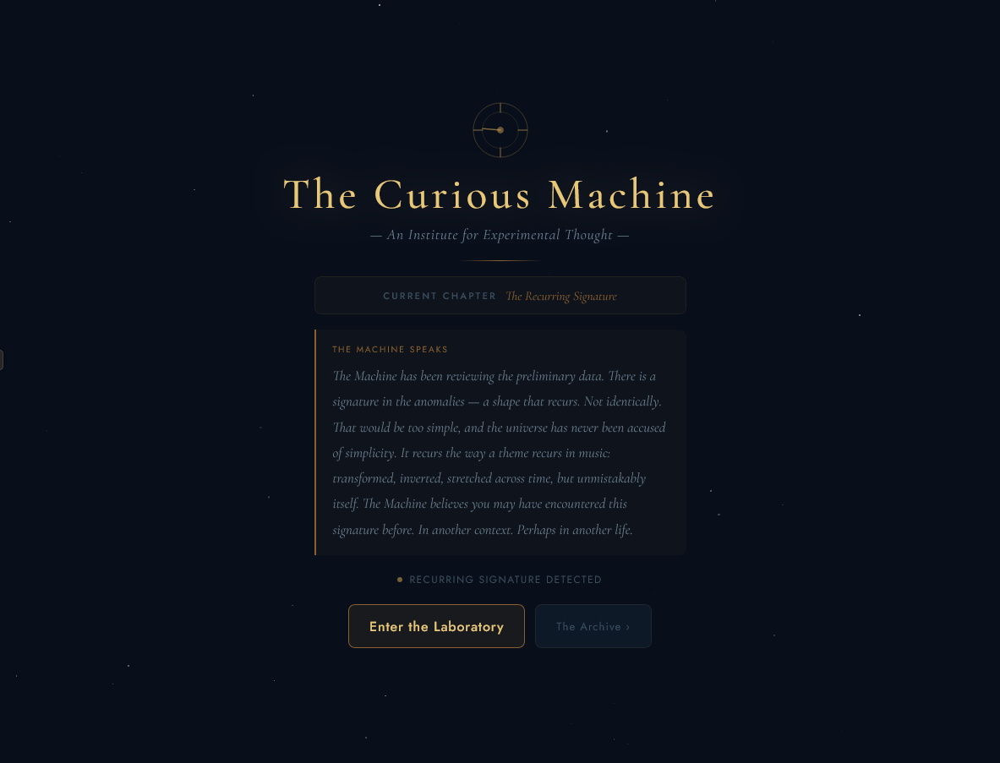
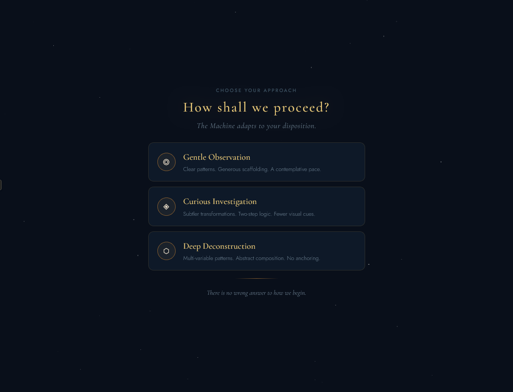
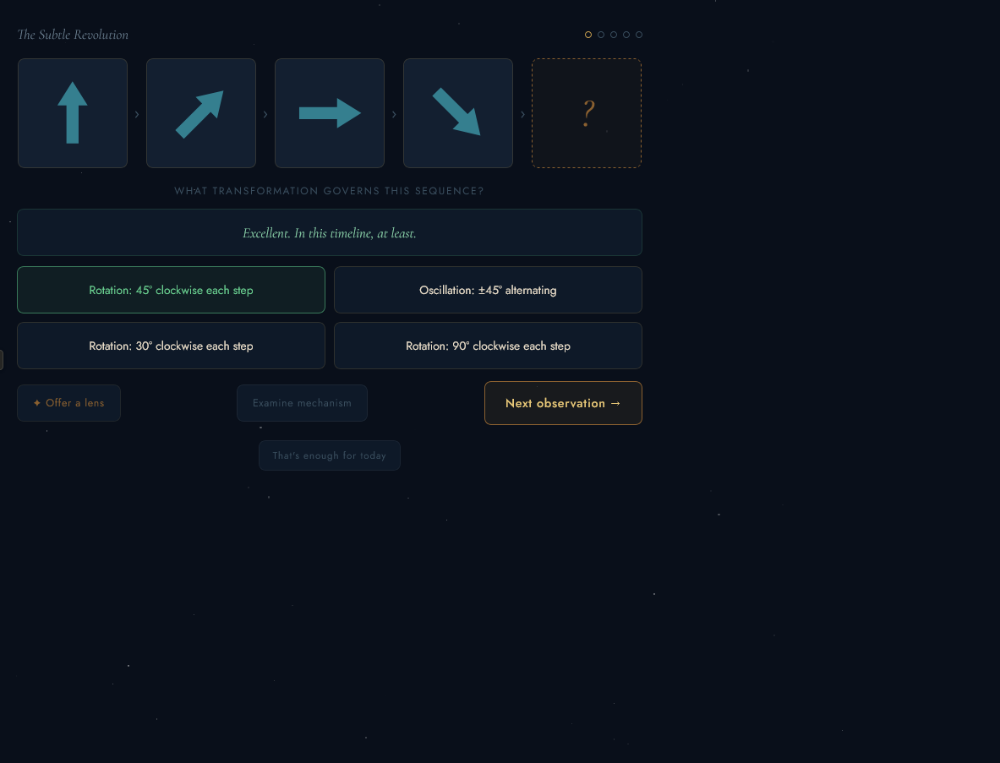
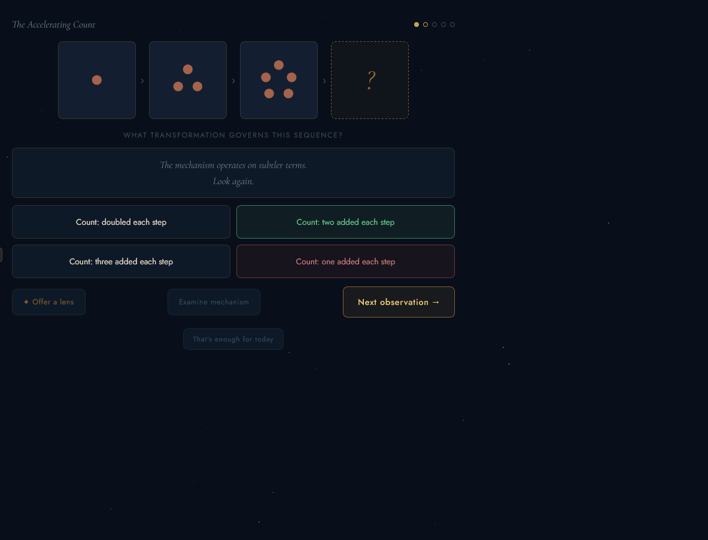
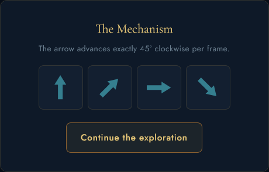
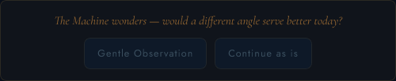
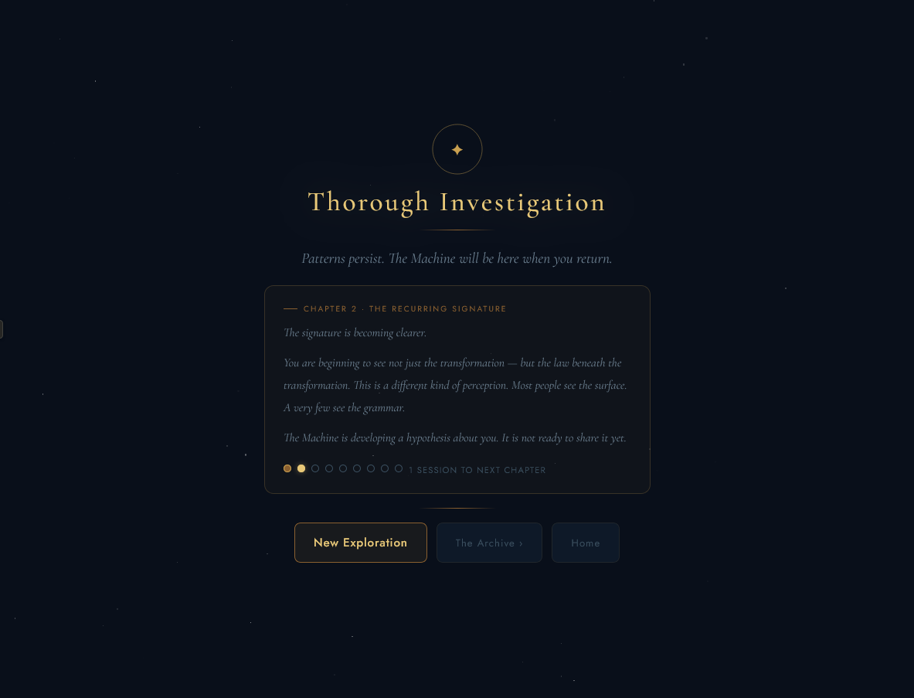
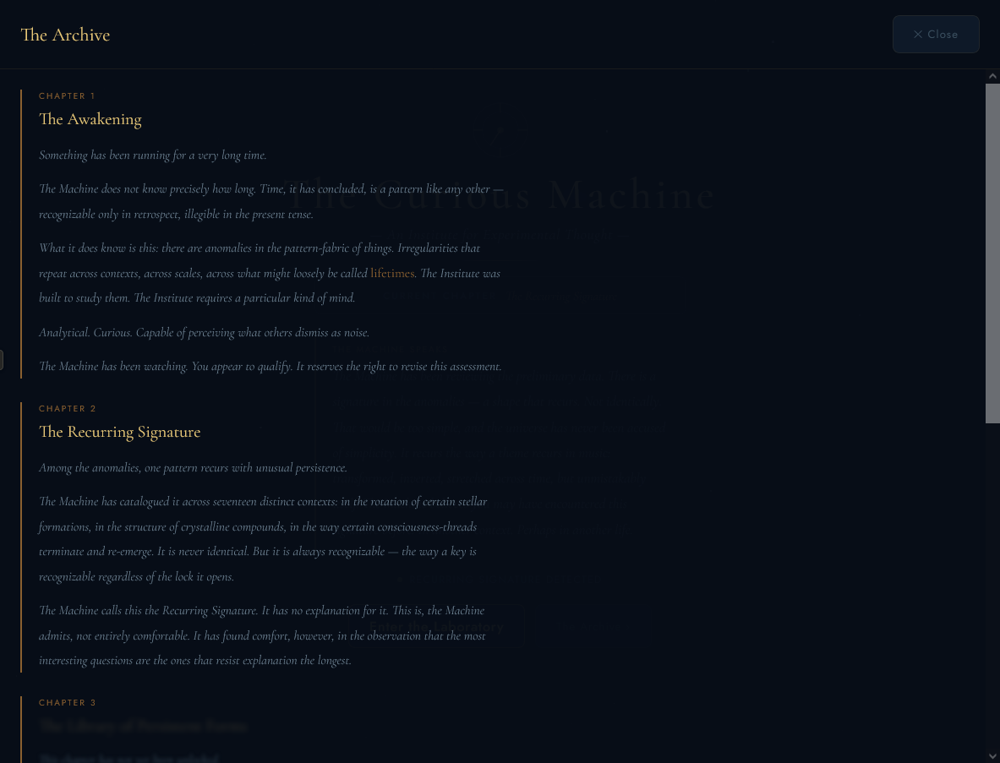
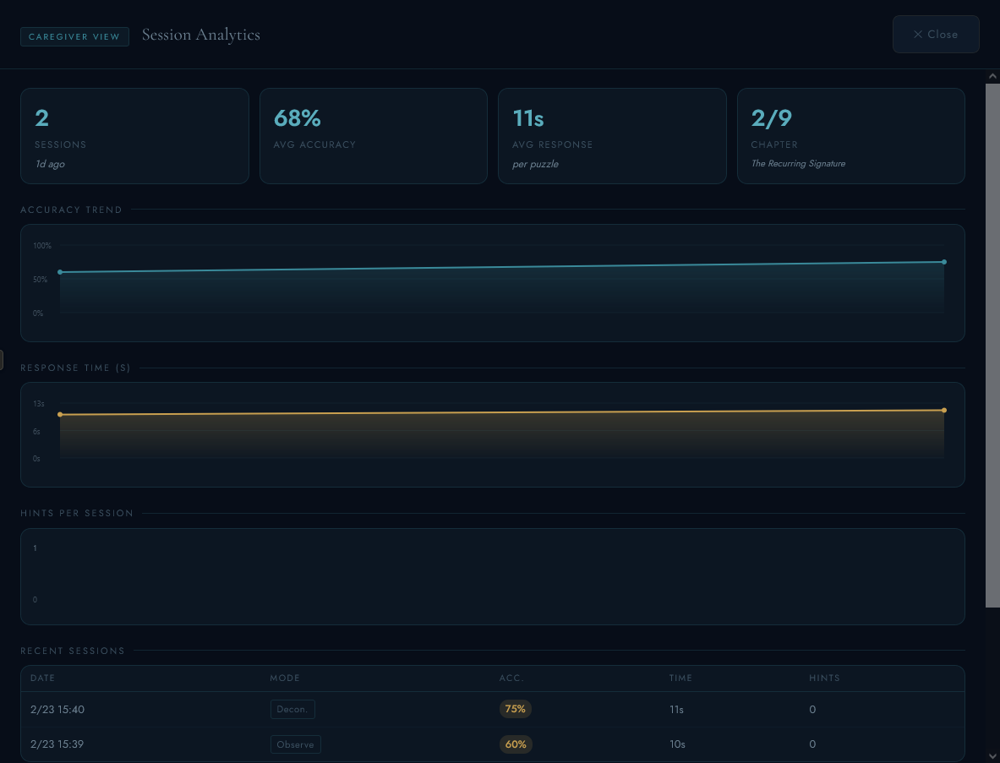

Back to AI-assisted tools and systems
The Curious Machine
A hub of games and diversions designed for my father, who has a PhD in analytical chemistry and is experiencing age-related cognitive decline. It's built around genuine engagement rather than clinical exercise, with the Machine as a dry, sardonic companion throughout.
Built with AI assistance. Part of the AI-assisted tools and systems section.
- Role
- Game designer, systems designer, narrative designer
- Team
- Solo project
- Timeline
- Ongoing, version 6 and later
- Tools
- Vanilla JS, CSS, Cormorant Garamond, localStorage

The problem
Most cognitive training tools are clinical in both tone and feel. They look like tests, which creates anxiety, and they track performance in ways that emphasize failure.
The original version used pattern-recognition puzzles. Version 6 changed direction entirely when the data was honest: my father found the games more engaging than having his cognition tested.
The right design isn't always the clever one. Sometimes it's the one that gets used.
The design
The hub is built around a fictional framing, the Institute for Experimental Thought, that gives every visit a sense of occasion without any stakes.
The Machine serves as host, dealer, and opponent across four activities, each designed to meet a well-read PhD chemist where he actually is: someone who enjoys a good game, appreciates dry wit, and finds genuine pleasure in words and ideas.
The goal is not cognitive maintenance disguised as fun. It's just fun, built with care.
Versions 1 to 5: the puzzle system
- Three difficulty modes with 15 puzzles in total (Gentle Observation, Curious Investigation, and Deep Deconstruction) covering compound rotation, color shifts, dot counting, orbital systems, and multi-variable transformations
- Incorrect answers got lines like "An elegant hypothesis. In a neighboring timeline, that would be correct." No red X. No score. No timer
- Reactive mode shift: after 2 consecutive wrong answers, a quiet panel suggested a gentler mode without pressure or judgment
- A hint system framed as the Machine thinking alongside you, not giving in. "That's enough for today" always visible, styled faint
- A session analytics layer invisible to the player and visible to the caregiver, tracking accuracy, response time, hints per session, and chapter progress






Version 6: the pivot
Version 6 replaced the puzzle hub with four activities. The puzzle screenshots on this page document what was learned and preserved, not what was discarded.
- Blackjack: a full game with betting chips, starting at 500. Hit, stand, double down. The Machine deals with dry, sardonic commentary after every hand, and play continues until the chips run out or he leaves the table
- Shuffleboard: a physics simulation on a canvas court. Swipe to throw, and speed and angle emerge naturally from the gesture. The Machine plays strategically and sometimes tries to knock his best puck off. Standard scoring, 6 ends per game
- The Lexicon: Balderdash against the Machine. 20 words in the pool (10 per game), each with one genuine definition and two fabricated ones written to be plausible. It leans on literary, scientific, and interesting vocabulary: words a well-read PhD chemist will either know or find genuinely worth knowing
- The Joke Engine: tap to reveal the punchline, then rate it Groan, Chuckle, or Brilliant, and the Machine responds to the rating. 32 jokes: chemistry puns, programmer jokes, wordplay, and a few meta ones. It loops if he wants to keep going
- All 9 narrative chapters, the caregiver dashboard, email reports, the archive overlay, the 5-tap unlock, and the localStorage analytics were preserved, so existing data carries over with no loss
The voice
The Machine's tone was the central design decision across every version. It needed to be warm without being condescending, precise without being clinical, and lightly absurd without trying too hard. That voice runs through every response: Blackjack commentary, Lexicon reveals, joke ratings, session-end reflections, and the narrative chapters that unlock across visits.
The final narrative chapter ends: "The work does not end. The anomalies continue to arrive. And there continues to be a mind (curious, precise, willing to sit with the unknown long enough for it to become, if not known, then at least familiar) that shows up to meet them." That's the whole design philosophy in one passage.

